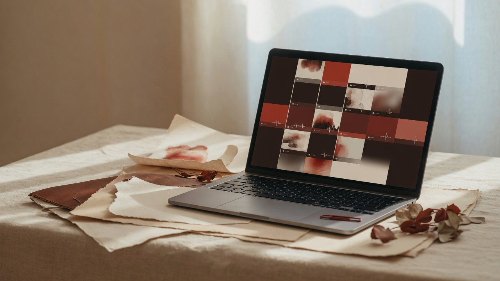
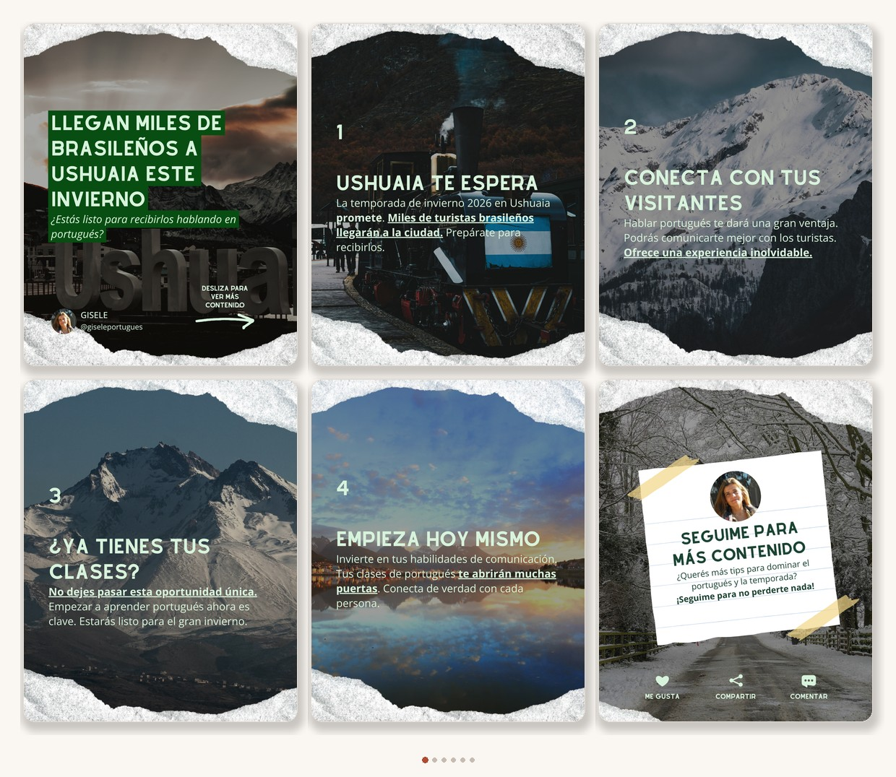
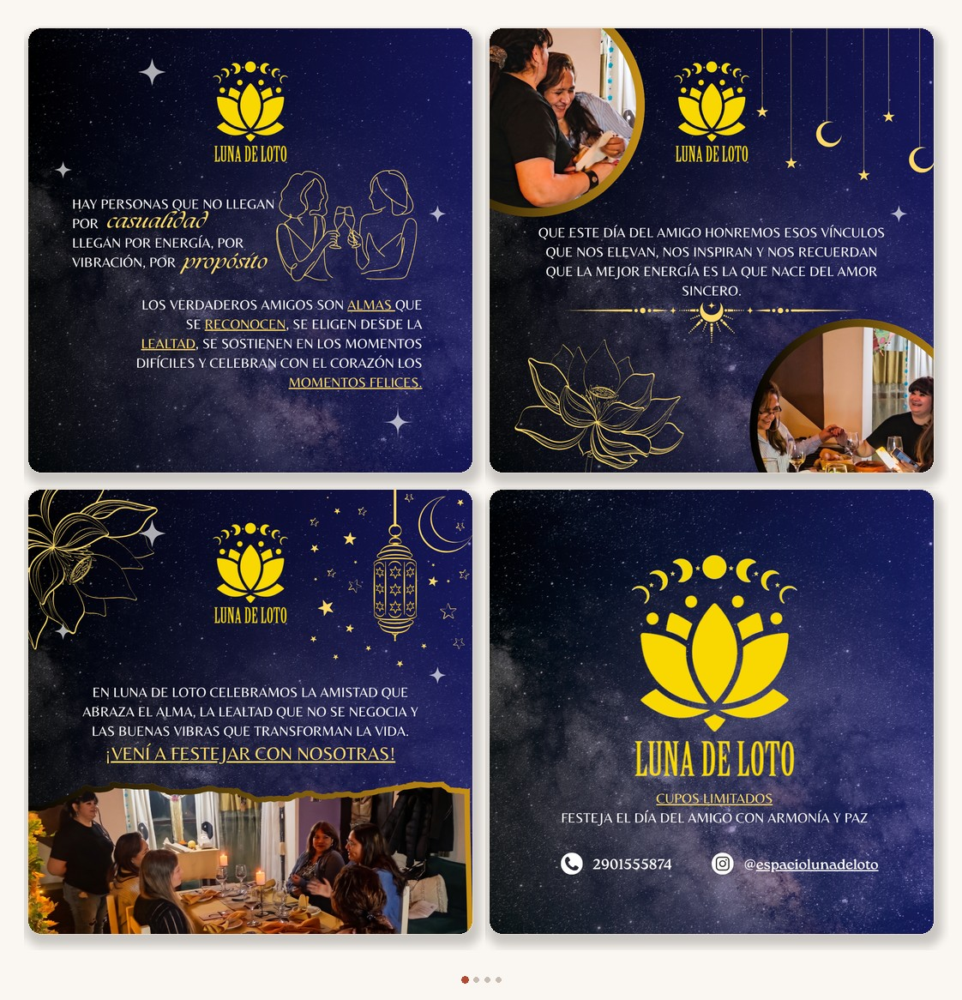
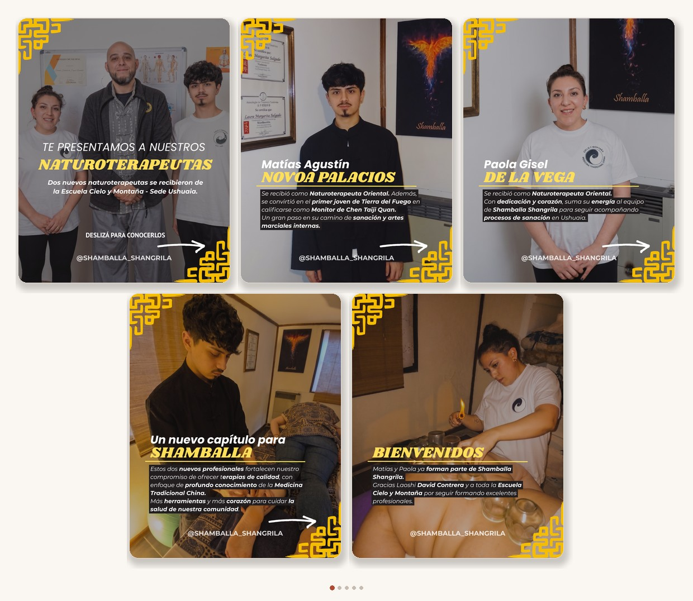
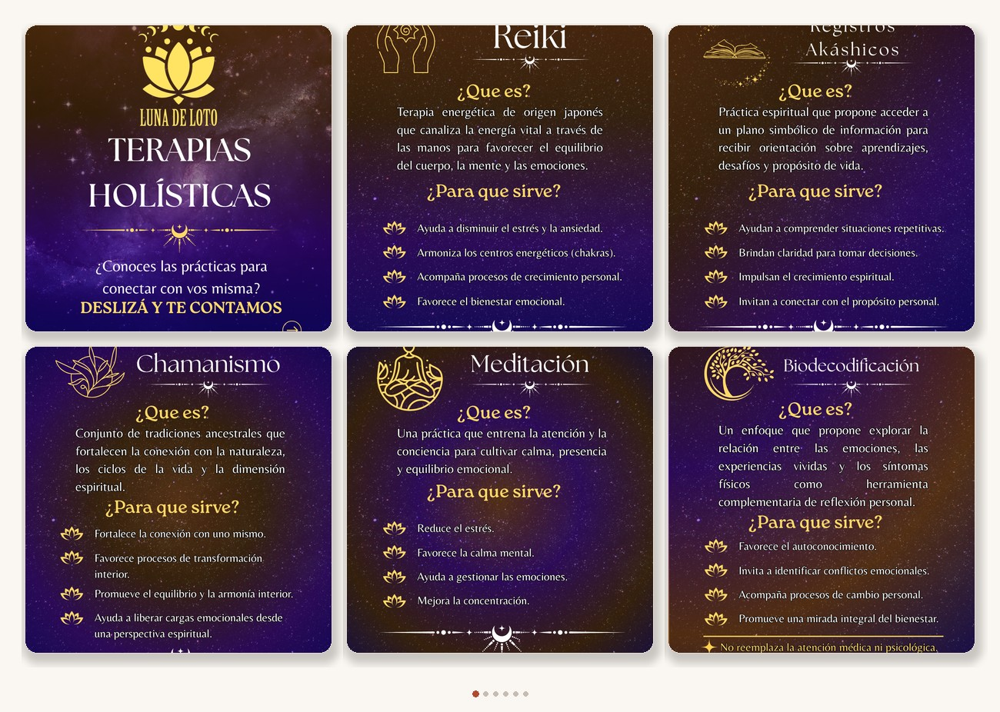

01
Editora de vídeo
Reels, TikToks y piezas cortas: cortes, ritmo, subtítulos y hooks. El trabajo se mira hasta el final y llega listo para publicar en vertical.
Editora de vídeo · Creadora de contenido
Community manager · Diseño para redes
Edito reels y piezas cortas con ritmo, creo contenido que se siente real, cuido la comunidad y diseño material gráfico para el feed. Especial foco en marcas lifestyle, belleza y emprendimientos. Trabajo 100% remoto.

Ambiente de estudio · material de ejemplo
Soy Marianela. Primero, editora de vídeo: reels y piezas cortas con ritmo y subtítulos (CapCut y herramientas ágiles). Después, creadora de contenido con cara humana. También hago community management y diseño para redes (Canva y más).
Estoy en una etapa de crecimiento fuerte: ganas, prolijidad y ojo visual. Ideal para marcas lifestyle, belleza o emprendimientos que quieren contenido claro y humano. 100% remoto.
Cuatro frentes, en este orden. Ideal para lifestyle, belleza y marcas que empiezan o crecen online.
01
Reels, TikToks y piezas cortas: cortes, ritmo, subtítulos y hooks. El trabajo se mira hasta el final y llega listo para publicar en vertical.
02
Ideas y piezas con cara humana: guiones cortos, demos, testimonios, storytelling y contenido que se siente nativo en la plataforma.
03
Calendario, publicaciones, inbox y tono de marca. La cuenta se siente viva, ordenada y en conversación real.
04
Posts, stories y carruseles con la misma familia visual. Identidad clara en el feed, sin improvisar cada pieza.
Collages de carruseles para Instagram: varias piezas en una sola lectura, con identidad de marca y ritmo de feed.

Carrusel · 6 slides01 · Contenido + diseño

Carrusel · 4 slides02 · Diseño para redes

Carrusel · 5 slides03 · Contenido + diseño

Carrusel · servicios04 · Diseño · Community
Stills, posts y reels verticales (Reels / TikTok, 9:16). Curá solo lo mejor: los portfolios fuertes muestran calidad, no cantidad.
No hay piezas en este filtro todavía.
Simple y predecible. Así saben qué esperar marcas y equipos.
Objetivos, tono, referencias y plazos. Una llamada o un formulario corto.
Plan de piezas o de community, sin humo: qué se entrega y cuándo.
Edición, diseño o gestión con avances para comentar a tiempo.
Archivos listos para publicar + ajustes acordados.
Palabras de marcas y espacios con los que trabajé.
“Resumiendo en pocas palabras, Maia refleja en sus trabajos frescura, color y autenticidad, algo muy simple y que hoy está acotado. Los/as invito a que a través del trabajo de Maia transmitan lo que quieran visibilizar y vender a través de su calidez, experiencia y creatividad.”
“Creatividad, espontaneidad, dinamismo y compromiso: características que destacan del servicio que presta.”
“Hola Maia, antes que nada te agradezco el buen trabajo que hiciste: fue muy fresco. No sentí que fuese un video o una edición más, sino que tuvo tu impronta. Es la primera vez que no necesito corregir y que puedo despreocuparme. Así que muchas gracias por tu gran labor.”